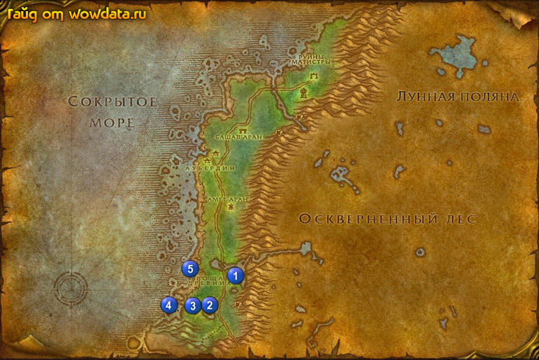

1) Летите в Дарнасс и выучите новые скилы (или плывите в Экзодар за скиллами, маги и шаманы).
2) Закончите <Ону> в Темные берега 1 (43, 76), начните <Меч Властителя>.
3) Идите на юго-запад 2 (39, 85) пока не увидите надпись <Меч Властителя> (закончен). теперь используйте [Фиал виденья Талваша], нажмите на появившуюся чашу правой мышкой и закончите <Меч Властителя>, начните <Лагерь Сумеречного Молота>.
4) Нажмите на книгу 2 (38, 86) и закончите, начните <Возвращение к Ону>.
5) Начните <Спасение Тирелин> 2 (39, 87) и делайте его (охраняйте ее).
6) Закончите <Рассеянный геолог> 3 (35, 83), начните <Рассеянный геолог> и делайте его (советую сначала зачистить площадку от мобов, только не лутайте мобов чтобы они дольше не респавнились).
7) Идите на запад 4 (31, 83) и (31, 86) и начните там <Останки морской черепахи>.
8) Остановитесь 5 (35, 74) и делайте <РАЗЫСКИВАЕТСЯ: Глубомрак!>, зачистите лагерь, из воды начнут выбегать волны мобов всего будет 2 волны на 3 выйдет Глубомрак, он 19 лвл. Если у вас возникнут проблемы с его убийством, попросите любого встречного вам помочь.
9) Идите назад 1 (43, 76) закончите <Возвращение к Ону>, начните <Реликвии Матистры>.
10) Недалеко начните 1 (44, 76) <Спящий пробудился>, и ведите эльфа. Возьмите в коробке рядом рог, чтобы будить эльфа, так как он засыпает каждую минуту или чаще. Пока будете его вести, советую идти не по дороге, чтобы избежать встречи с мобами которые вылезают по этому квесту.